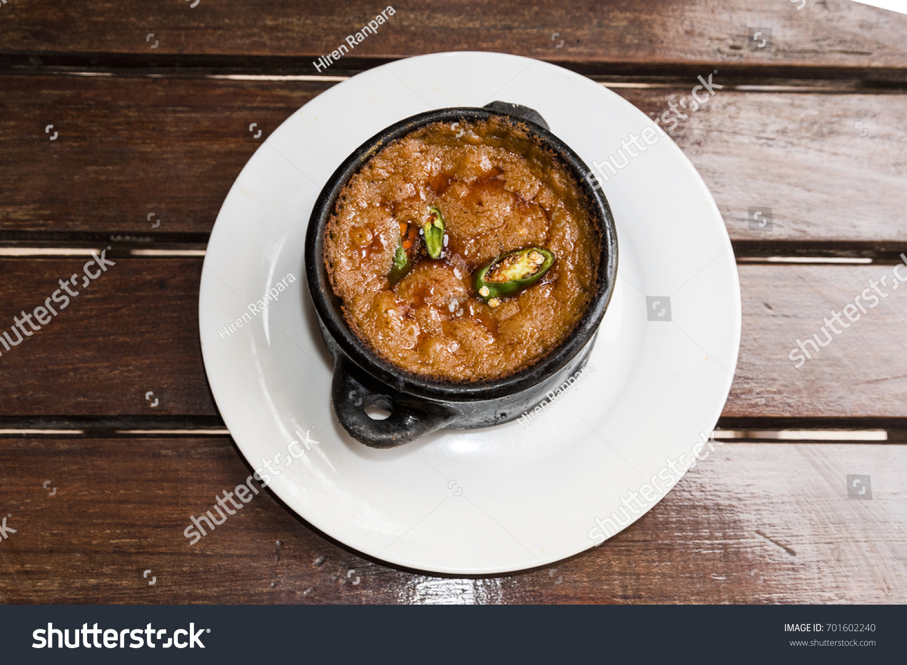

Shiro recipe

Shiro
Shiro is one of the most popular food in Ethiopian
Here are the main ingredient
- Shiro flour
- Barbare flour
- Oil and salt
- Garlic and spices
Steps
- Saute onions
- Add garlic and spices
- Add water
- Whisk in shiro powder
- Simmer and adjust
- Serve hor
Home Page